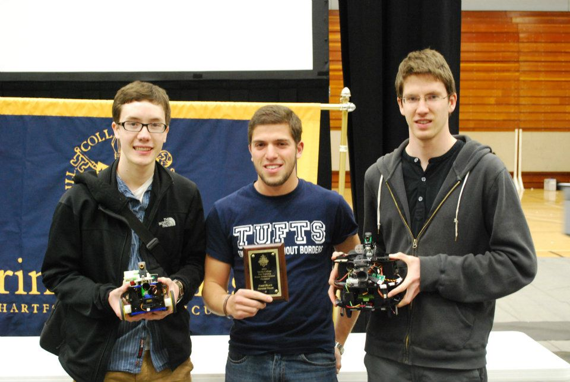

← Will Makes Things.

Firefighting Robots
The Tufts Robotics Club competed in the Trinity Firefighting Competition for three years (2010 through 2012). I led the team each year as we developed mobile robots to navigate a maze, find a candle, and extinguish it.

We built a total of three robots over the three years: The Precipitating Pachyderm, JumboShrimp, and Jumbotron (all named after the Tufts University mascot: Jumbo, the elephant).

The robots are equipped with most of the same sensors: a number of IR distance sensors, an IR photodiode to detect the flame, IR line sensors, and encoders on the wheels. The algorithm that the robots use looks something like this:
follow left wall
if there's a line on the floor
align to line and check for flame
if there's a flame
go and extinguish it
else
turn around
Of course there's a lot more complexity in terms of executing each command and there are many cases that have to be accounted for (like switching walls to follow so the robot can search an island room).
The Trinity Firefighting Competition also features a written exam called the Olympiad Exam which teams take as a group. The exam tests problem solving ability specifically in the context of robotics. For example, you may be asked to optimize the delivery order of sushi-carrying robots given constraints on how many robots can fit in each room.
We turned out to be really good at this and got first place on the Olympiad Exam two years in a row (and tied for second place our first year).
